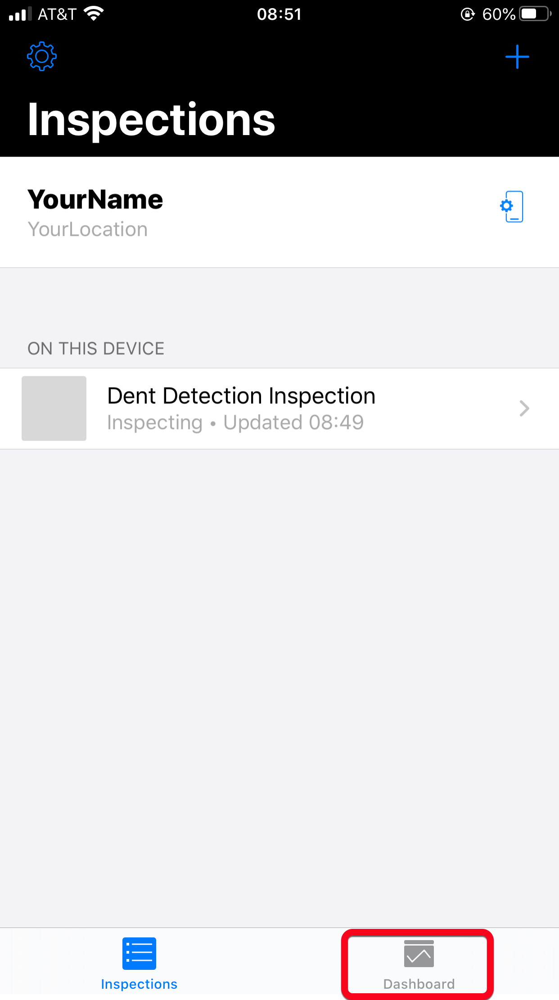
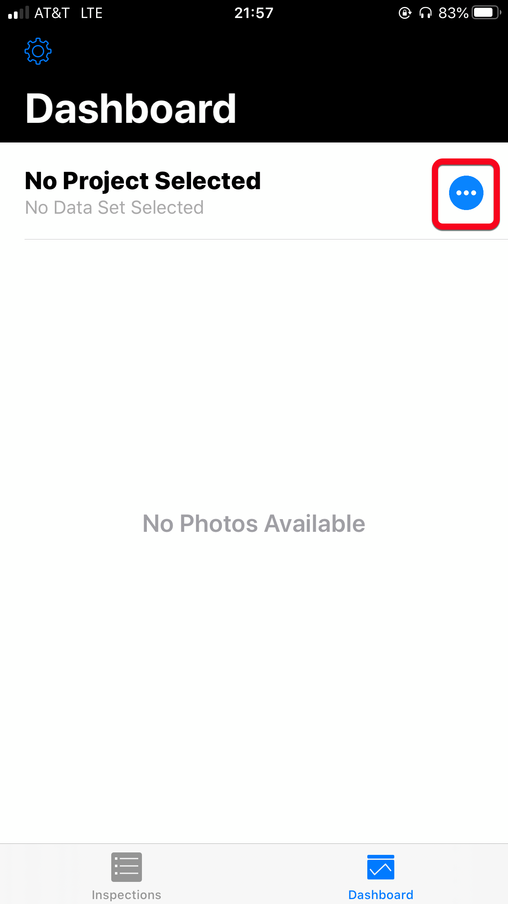
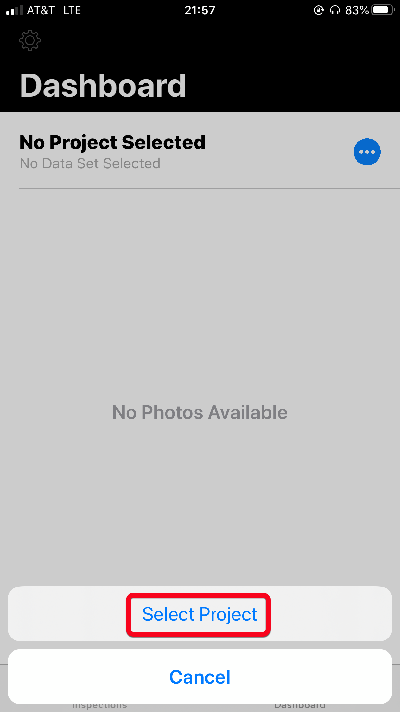
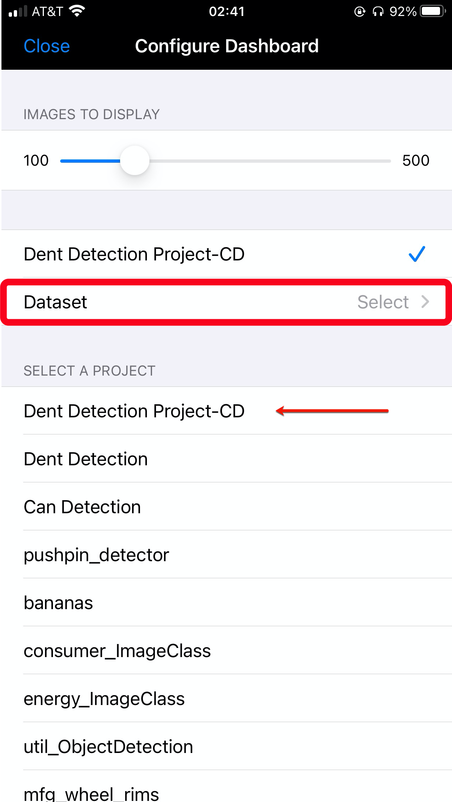
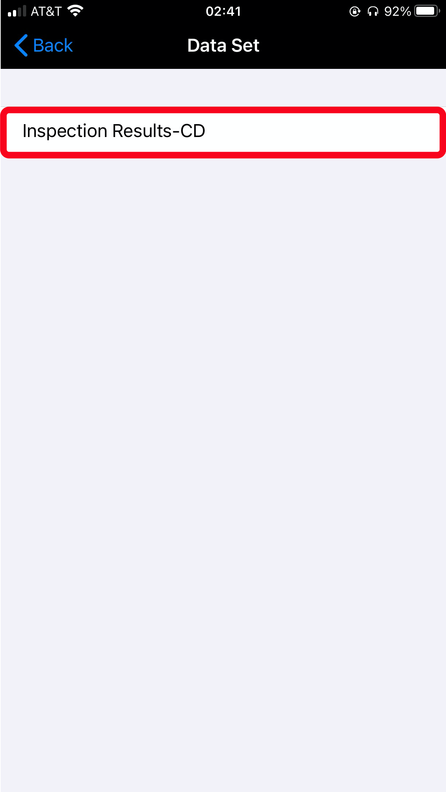
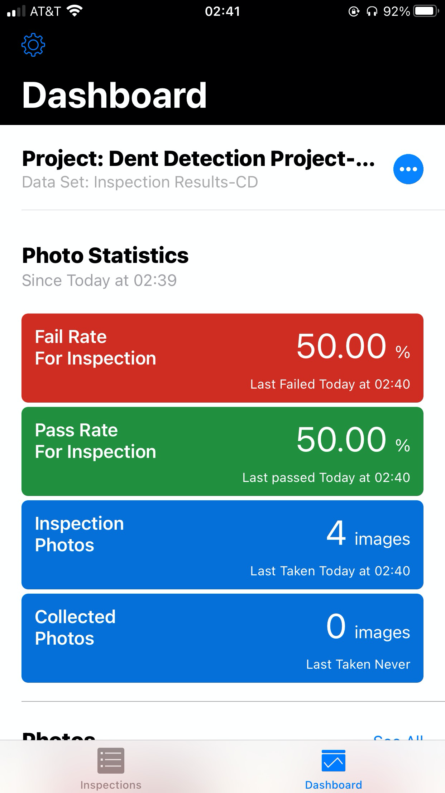

Exercise 2.3 - Fail/Pass Rate Dashboard Configuration
Now that we have created an inspection and inspected a couple cans, we can get real-time data on how our production line is doing.
-
Go back to the MVI app and click
Dashboardat the bottom.
-
Click on the three dots by
No Project Selected.
-
Then Select
Project.
-
Click on the Project you created in Exercise 1.3, then select
Dataset.
-
Then select the
Data Setyou created with the inspection.
-
You should now see the Dashboard that has been generated based on your inspection.

Congratulations, you have completed Exercise 2!
You have created and conducted an inspection on aluminum cans for a manufacturing line. You are also able to draw insights with a real-time Pass/Fail Rate Dashboard on how your manufacturing line is doing.